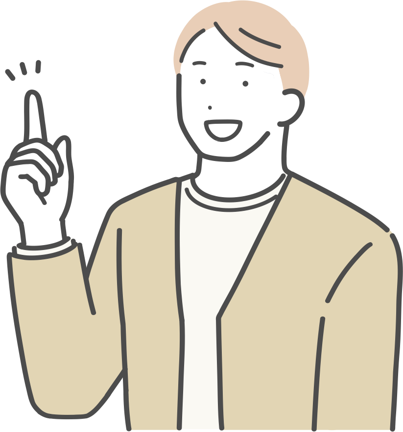

{{ c.no }}
{{ c.en }}
{{ c.name }}
{{ c.desc }}
DEPARTMENTS 学科
- {{ d.n }} {{ d.d }}
主な進路（例） {{ c.career }}
6学部14学科の学びの特色、所属学科、卒業後の主な進路を紹介します。興味のある分野から絞り込んでください。
{{ c.desc }}
所属学部の専門に加えて、他学部の科目群をまとめて履修できます。たとえば経済経営学部で学びながら情報科学の副専攻を修めることも可能です。

入試方式を確認する▶